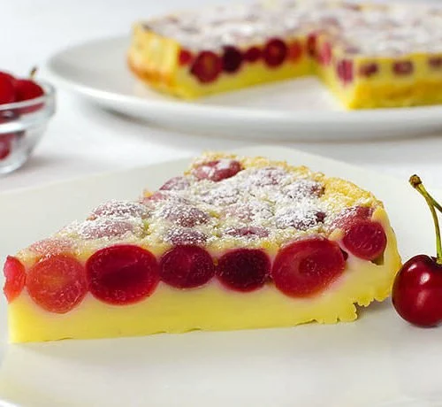
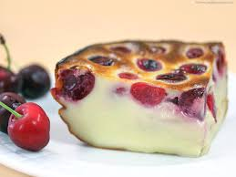

Clafoutis
Le clafoutis est un dessert traditionnel français, originaire de la région du Limousin, réalisé avec des fruits frais, généralement des cerises, recouverts d'une pâte à crêpes légère. C'est un dessert simple mais délicieux, parfait pour mettre en valeur l'arôme sucré des fruits de saison. Le clafoutis est généralement servi chaud ou à température ambiante et peut être accompagné de crème fraîche ou de glace. C'est une façon merveilleuse de savourer le goût des fruits dans une forme élégante et réconfortante.
 Ingrédients :
- 500g de cerises dénoyautées
- 4 oeufs
- 100g de sucre
- 1 sachet de sucre vanillé
- 50g de farine
- 25cl de lait
- 1 pincée de sel
- Beurre pour le moule
Instructions :
- Préchauffez votre four à 180°C (thermostat 6).
- Beurrez légèrement un moule à tarte.
- Répartissez les cerises dénoyautées dans le moule.
- Dans un bol, battez les œufs avec le sucre et le sucre vanillé jusqu'à ce que le mélange soit mousseux.
- Ajoutez la farine tamisée et la pincée de sel, puis mélangez jusqu'à obtenir une pâte lisse.
- Incorporez progressivement le lait tout en continuant de mélanger.
- Versez la préparation sur les cerises dans le moule.
- Enfournez pendant environ 30 à 35 minutes, ou jusqu'à ce que le clafoutis soit doré et pris.
- Laissez refroidir légèrement avant de servir.